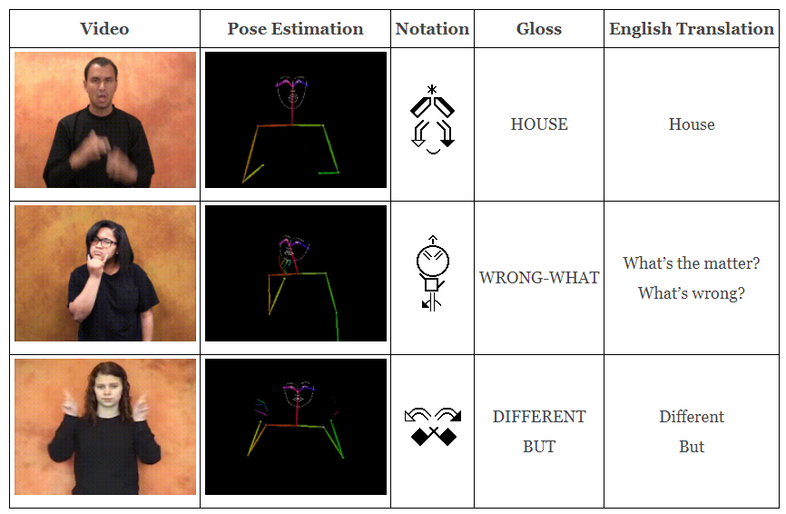
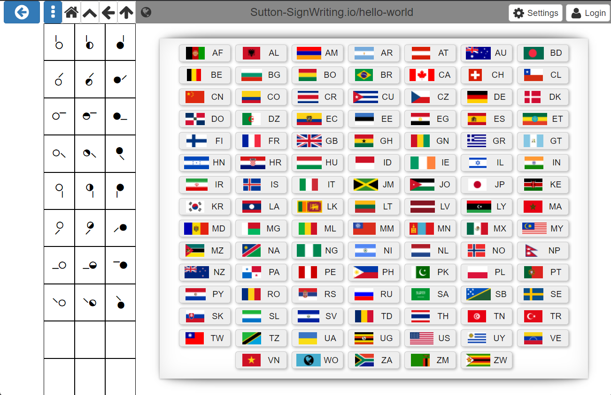
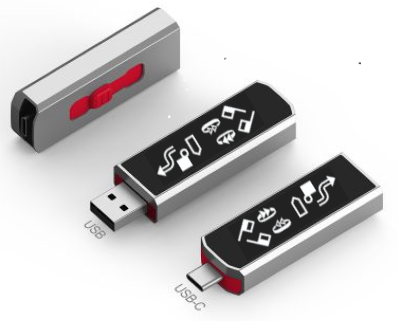

Sutton SignWriting

The Sutton SignWriting script is the universal and complete solution for written sign language, ISO 15924 script code "Sgnw". It has been applied by a wide and deep international community of sign language users. Sutton SignWriting is an international standard for writing sign languages by hand or with computers. From education to research, from entertainment to religion, SignWriting has proven useful because people are using it to write signed languages.
Formal SignWriting is one particular computerized design for Sutton SignWriting. Formal SignWriting envisions a sign as a two-part word of time and space. Each word is written as a string of characters that can be recognized and processed by regular expressions. The design has been optimized for display, searching, sorting, text flow, and other character processing.
www.Sutton-SignWriting.io is a website of information and resources about the Sutton SignWriting script and Formal SignWriting technology.
Specification
The Formal SignWriting specification is a faithful encoding of Sutton SignWriting that is documented in an Internet Draft submitted to the IETF.
Characters
Any sign can be written as a string of characters. Formal SignWriting has two sets of characters that can be used: Formal SignWriting in ASCII (FSW) and SignWriting in Unicode (SWU). These sets are isomorphic with an easy bi-directional conversion between the two sets.
| Description | FSW Characters | SWU Characters |
|---|---|---|
| Sequence Marker | A | U+1D800 |
| Signbox Markers | B, L, M, R | U+1D801 to U+1D804 |
| Numbers | 250 to 749 | U+1D80C to U+1D9FF |
| Symbols | S10000 to S38b07 | U+40001 to U+4F428 |
Fonts
The TrueType Fonts can be used without installing the fonts on any platform with font-face statements. Simply include the following CSS in any HTML page to access the fonts.
@font-face {
font-family: "SuttonSignWritingLine";
src:
local('SuttonSignWritingLine'),
url('https://unpkg.com/@sutton-signwriting/font-ttf@1.0.0/font/SuttonSignWritingLine.ttf') format('truetype');
}
@font-face {
font-family: "SuttonSignWritingFill";
src:
local('SuttonSignWritingFill'),
url('https://unpkg.com/@sutton-signwriting/font-ttf@1.0.0/font/SuttonSignWritingFill.ttf') format('truetype');
}
@font-face {
font-family: "SuttonSignWritingOneD";
src:
local('SuttonSignWritingOneD'),
url('https://unpkg.com/@sutton-signwriting/font-ttf@1.0.0/font/SuttonSignWritingOneD.ttf') format('truetype');
}
If the fonts are installed, then the system fonts will be used. If the fonts are not installed when a SignWriting Font page is opened, the CSS will cause the fonts to be automatically downloaded to the browser's cache on the first visit. Once the fonts are installed in the browser cache, they will remain there until the browser cache is emptied. Any webside that uses this CSS can access the browser installed font without requesting a new copy. The fonts are 18 MB, so the first page view make take a few seconds or longer depending on your download speed and processor.
Production
Sutton SignWriting has several production ready packages available on GitHub, NPM, and Unpkg.
@sutton-signwriting/core
a javascript package for node and browsers that supports general processing of SignWriting text
@sutton-signwriting/font-db
a javascript package for node that generates SVG and PNG images for individual symbols and complete signs
@sutton-signwriting/font-ttf
a javascript package for the browser that generates SVG and PNG images for individual symbols and complete signs using TrueType Fonts
@sutton-signwriting/sgnw-components
a javascript package for the browser that includes a collection of web components built with https://stenciljs.com/
SignMaker 2022
Sutton SignWriting has one prototype that is ready to use.
@sutton-signwriting/signmaker
an online editor that can be accessed directly, embedded in an iFrame, and downloaded
Machine Learning
Sutton SignWriting is growing in the machine learning communities.
- handwriting recognition of SignWriting
- video to SignWriting
- SignWriting to spoken language
- spoken language to SignWriting
@sign-language-processing
A collection of projects using SignWriting with large datasets and machine learning.

@sign-language-processing/sign-translate
A bi-directional multilingual translation app for desktop and mobile, based on state-of-the-art real-time client side models.
@sign-language-processing/signwriting-annotator
This project aims to transcribe in SignWriting a large vocabulary of single-sign videos in various signed languages.
@agarsev/visse
The VisSE project ("Visualizando la SignoEscritura", "Visualizing SignWriting") aims to develop tools that ease the use and understanding of SignWriting in the digital world.
@andreihirata/SignWriting
Python script for extracting deep learning features from images.
@J22Melody/signwriting-translation
Python scripts to analyze SignWriting text
Development
Sutton SignWriting has three coding projects under development.
@sutton-signwriting/cloud-maker
a collection of scripts and data used together to make a functional Sutton SignWriting Cloud server
@sutton-signwriting/hello-world
a client-side application with optional connection to a cloud server 
@sutton-signwriting/portable
utilities to create filesystems, static websites, USB drives, client side applications, and cloud server installations 